StatementAbout the work
The body I have worn
Masoud Keshmiri's paintings illustrate his concern and interest in the human body and the expression of individuals' internal and external characteristics. He tries to create an active dialogue between the human figure and the audience.
By choosing an identical background and painting only female figures, he creates a unique collection in which each painting narrates an instance, an emotion or an instance of the women's everyday life.
His subjects are alone, quiet and distant women who stare into an unknown direction and stand by as mortal life passes by. Keshmiri's art is a part of life that in its simplicity, amplifies the passage of time without pretense and exaggeration.
Simple and flat backgrounds in contrast to the detailed bodies and the overwhelming amount of color used in depicting the clothes is what makes the audience to treat the body as a whole and pay attention to all the characteristics that one carries with herself. These are merely paintings. But the sketching, coloring, the brush strokes and the composition are so that the mind can make up stories for each and every one of them.
Works12 artworks

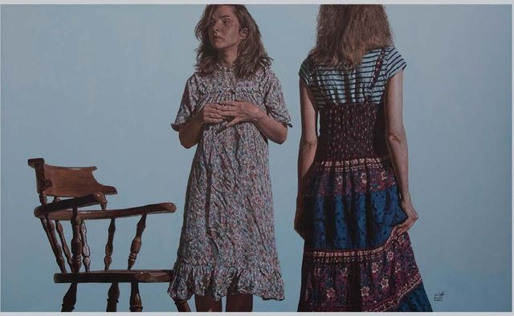

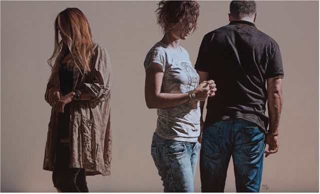

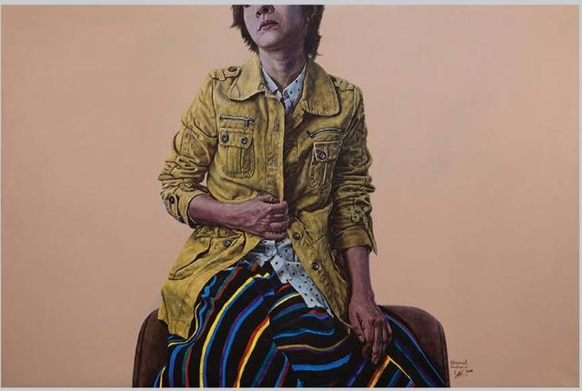

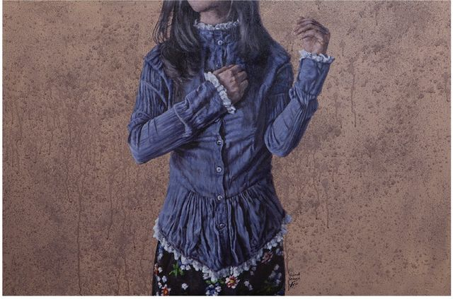

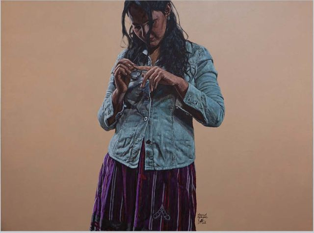

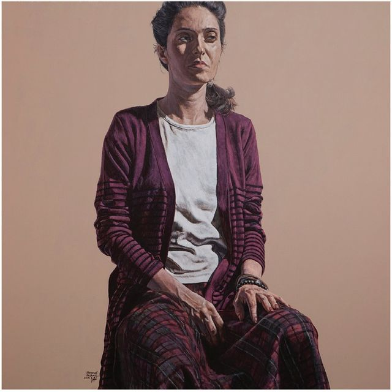

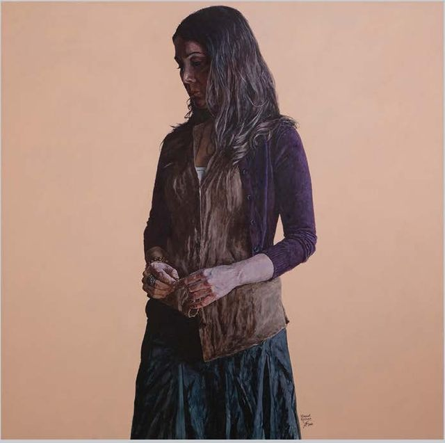

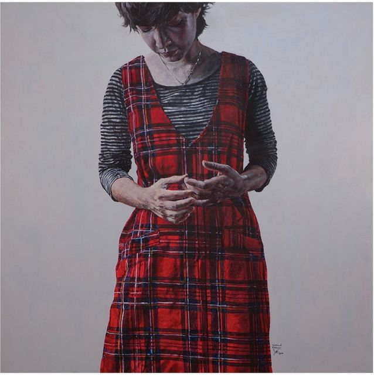

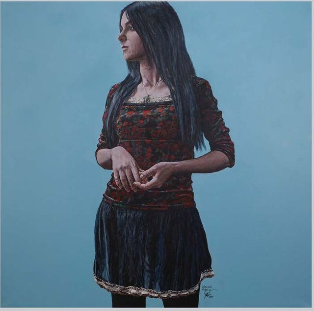

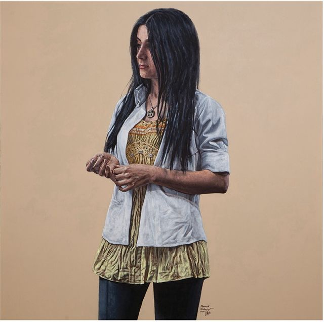

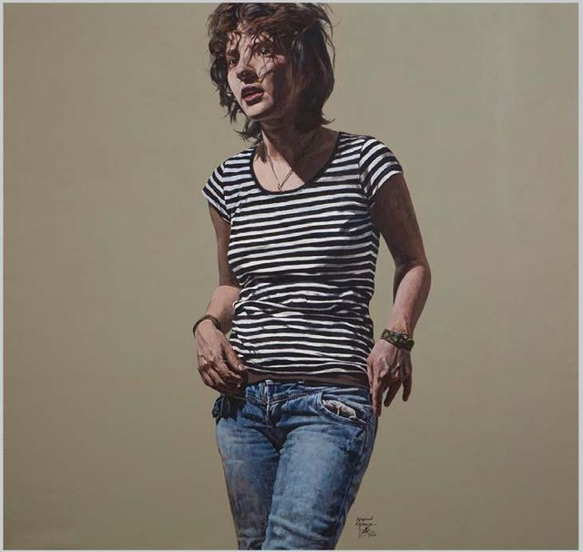

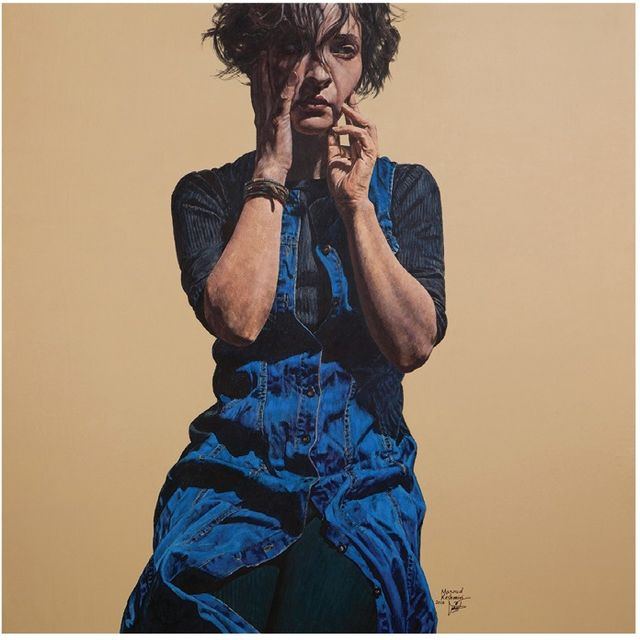
History of experienceBiography · education · exhibitions · awards
Education
- 2000–2004Master of Arts, Animation, University of Art|Tehran – Iran
- 1996–2000Bachelor of Arts, Graphics, University of Art|Tehran – Iran
- 1990–1994High School Diploma, Graphics, Sina Technical High School
Activities, awards and appreciations
- 2008Appreciation Award, Semnan University
- 2003–2004Top Thesis of Academic Year, University of Art
- 20011st All over Students Caricature Festival, Winner of First Rank
- 2000International Students Caricature Festival, Winner of Top Rank
- 19969th All Over Festival of Visual Arts of Country Youths, Participated
- 19958th All Over Festival of Visual Arts of Country Youths, Top Artist
- 19952nd Country Wide Azad University Student Theatrical Festival, Appreciation Award
Solo exhibitions
- 2015O Gallery|Tehran – Iran
Group exhibitions
- 2016Saless Gallery|Tehran – Iran
- 2015Silk Road Gallery|Tehran – Iran
- 2011Sin Gallery|Tehran – Iran
- 2010Sin Gallery|Tehran – Iran
Teaching experience
- 2010–12Visiting Assistant Professor, Art University|Tehran – Iran
- 2007–9Visiting Assistant Professor, Art faculty of Semnan University|Semnan – Iran
- 2001–4Visiting Assistant Professor, Art faculty of Ferdowsy University|Mashhad – Iran
Bibliography
- More than 120 cover illustrations
- More than 50 book and magazine illustrations
Source: the Sobhan Gallery artist catalogue “Masoud Keshmiri.pdf”.